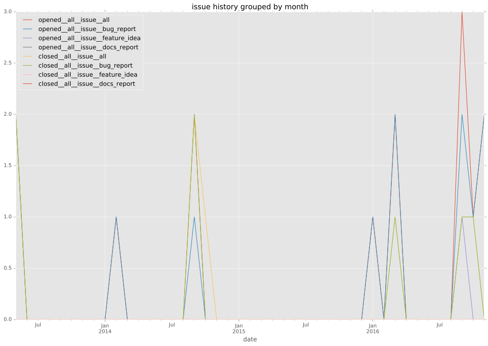
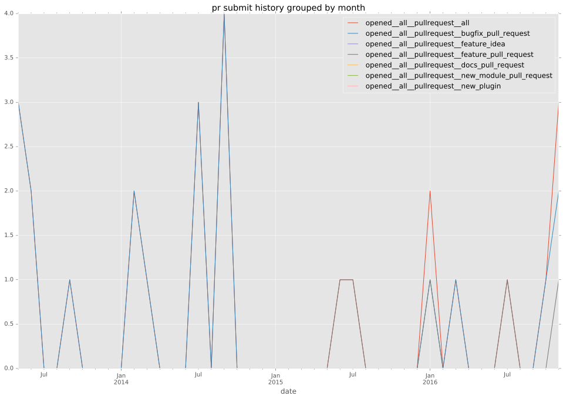

authors
- abulimov
maintainers
- abulimov
contributors
- AdmiralNemo : 1 commits
- prune998 : 1 commits
- mpdehaan : 3 commits
- zoresvit : 2 commits
- bcoca : 1 commits
- abulimov : 20 commits
- alxgu : 12 commits
- jctanner : 2 commits
- jpmens : 1 commits
total issue counts
feature pull request: 5
pullrequest: 23
bugfix pull request: 19
feature idea: 1
issue: 12
bug report: 10
issue history

pullrequest history


days open by issue type
bugfix pull request
count: 28
std: 16.6851881214
min: 0
max: 75
median: 2.0
mean: 8.89285714286
all
count: 42
std: 34.6781786478
min: 0
max: 214
median: 3.0
mean: 13.2380952381
pullrequest
count: 0
std: nan
min: nan
max: nan
median: nan
mean: nan
feature pull request
count: 7
std: 4.19182878603
min: 6
max: 16
median: 12.0
mean: 11.7142857143
feature idea
count: 0
std: nan
min: nan
max: nan
median: nan
mean: nan
issue
count: 0
std: nan
min: nan
max: nan
median: nan
mean: nan
bug report
count: 7
std: 80.246346898
min: 0
max: 214
median: 0.0
mean: 32.1428571429
closures grouped by total days open